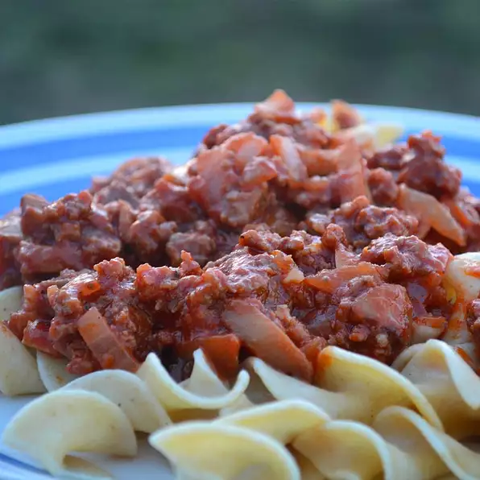

Gunk on Noodles

Description
Want some gunk? My mother came up with this wonderfully simple dish on a snowy Michigan night when all she had on hand was a pound of ground beef. My father and I just loved it, and when Dad asked her what it was called she laughed and said 'Gunk on Noodles.'
Ingredients
- 8 ounce package uncooked egg noodles
- 1 pound ground beef
- 1 small onion, chopped
- 1 clove garlic, minced
- 1 (6 ounce) can tomato paste
- 1 (4 ounce) can sliced mushrooms with juice
- 1 teaspoon sugar
- 1 tablespoon butter
- 1 teaspoon Worcestershire sauce
- salt and pepper to taste
Steps
- Bring a large pot of lightly salted water to a boil. Place the egg noodles in the pot, cook 6 to 8 minutes, until al dente, and drain.
- In a large skillet over medium-high heat, cook the ground beef 10 minutes, or until evenly brown. Mix in the onion and garlic, and cook until onion is tender. Mix in the tomato paste, mushrooms and juice, sugar, butter, and Worcestershire sauce. Season with salt and pepper. Continue to cook and stir 5 minutes, until bubbly and heated through. Serve over the cooked noodles.